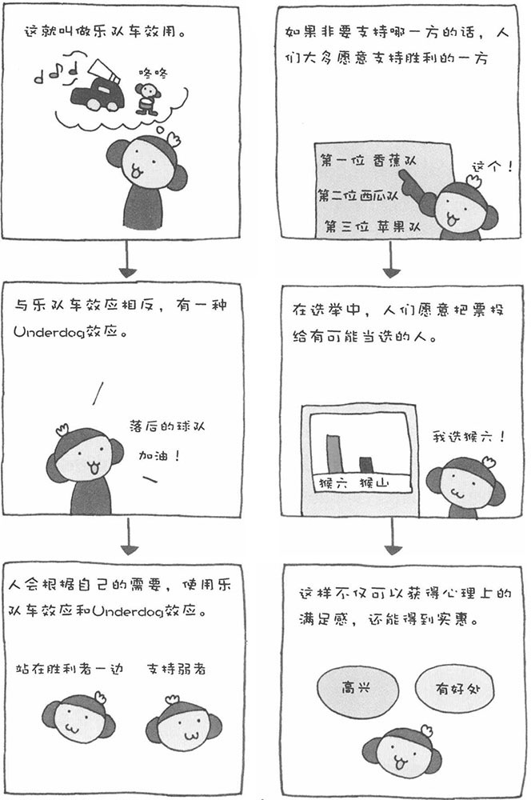

如果问政治家的座右铭是什么，他们肯定会冠冕堂皇地说一些漂亮的至理名言。实际上，在他们内心深处，都有一个同样的座右铭，那就是：永远站在胜利者一方。也就是说，哪一方有获胜把握，就支持哪一方。
日本的政治是派系政治，因此站在胜利者一方也许是政治家生存的必然方式吧。这种行为在心理学上被称为"乐队车效应"。"乐队车"是指在游行中开在最前面、载着乐队演奏音乐的汽车，乐队演奏的音乐使人情绪激昂、不自觉地就想跟在车后面参加游行。这种心理效应在政治家中非常普遍，一般人中也有不少存在这样的心理。
此外，还有一种与乐队车效应相反的心理效应，叫做"Underdog效应"，即支持弱者效应。对于与自己有直接关系的事情，多会产生"乐队车效应"，即愿意站在胜利者一方，而对于与自己无直接关系的事情，多会产生"Underdog效应"，即支持弱者或落后者。比如，某位政治家在代表选举中，肯定会支持有把握当选的人，因为这与自己的利益密切相关；而当他观看高中生棒球比赛的时候，多会为落后的队伍加油，因为棒球比赛的输赢对自己没有什么影响。
乐队车效应，在经济活动中也得到了广泛应用。我们经常在电影的宣传广告中听到这样的话："电影热映中，观众好评如潮"。其实，这些宣传语早在电影上映之前就已经准备好了，目的就是为了激发观众的心理产生"乐队车效应"。观众会这样认为：别人都看了，而且还好评如潮，那么我也要看。其实这只是电影公司的宣传罢了，至于是否"好评如潮"，观众朋友们还要自己做判断。
